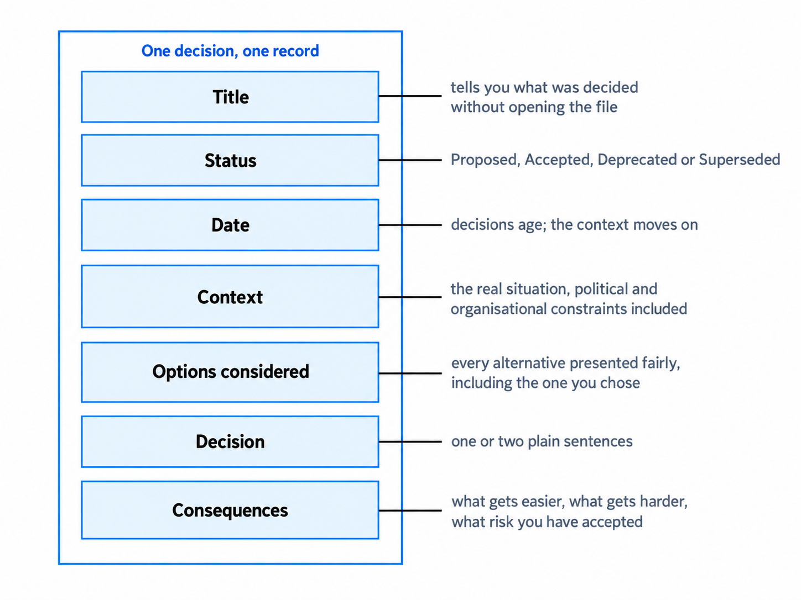
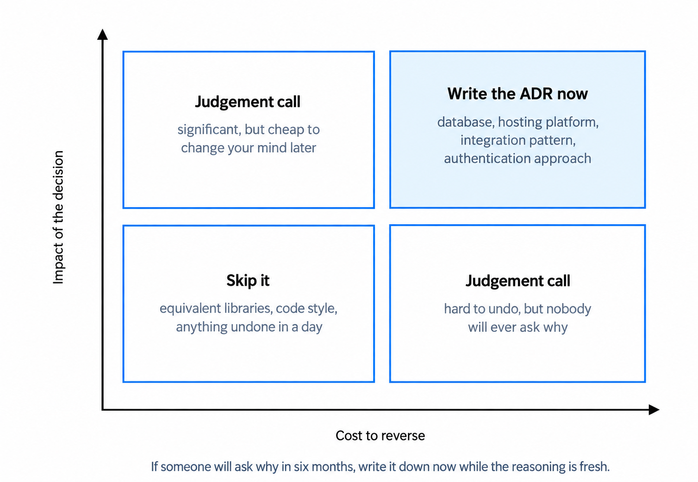
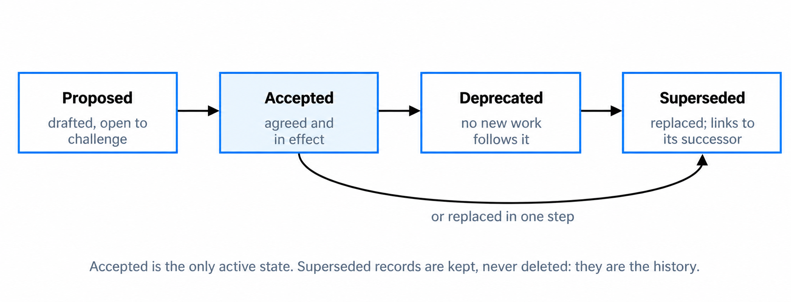
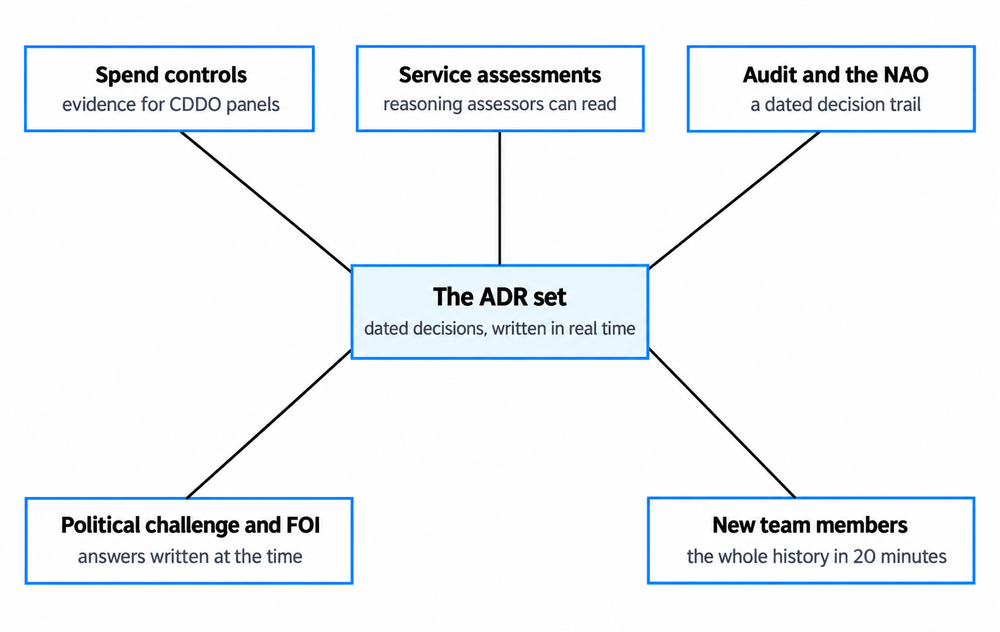

Architecture decision records in practice
Record important decisions so their reasoning remains clear.
You'll come away with:
- How to decide which architecture choices need a record
- A practical structure for context, evidence, decision and consequences
- How to manage status, ownership, approval and superseded decisions
- Ways to keep ADRs concise, discoverable and useful as evidence
What an ADR records
An Architecture Decision Record, or ADR, captures one significant architecture decision and the reasoning behind it. The government's Architectural Decision Record framework defines an architecture decision as a choice that affects a system's structure, quality attributes or behaviour.
The record helps later readers understand the context in which the choice was made. They can see which constraints applied, who was involved, what was decided and which consequences followed. This matters when the team changes or the service needs to revisit the decision.
Michael Nygard's 2011 article popularised the ADR format. Its central idea remains useful: keep each record short, write it for a future team member and include negative and neutral consequences as well as positive ones.
An ADR is not the complete architecture, a substitute for an options appraisal or proof that a good decision was made. It records the decision and points to the evidence needed to understand it.
The value of an ADR is not the choice alone. It is the context that allows someone to judge whether the choice still fits.
Use a structure that fits the decision
There is no single mandatory ADR template for every government decision. Nygard's original format uses title, status, context, decision and consequences. The government framework also includes the date, stakeholders consulted and links to supporting documents. Use the agreed template for your organisation and add detail only when it helps the decision.

A practical record can contain:
- Title: state the decision so it can be found in an index.
- Date and status: show when it was decided and whether it still applies.
- Context: describe the problem, requirements, constraints and assumptions that shaped the choice.
- Options and evidence: summarise credible alternatives, evaluation criteria and important findings, or link to the detailed appraisal.
- Decision: state what was chosen, any conditions and the scope to which it applies.
- Consequences: record benefits, costs, risks, dependencies and follow-on work.
- Ownership: identify the decision owner, decision authority and relevant contributors.
- Links: connect requirements, diagrams, prototypes, risks and related decisions.
Keep facts, assumptions and judgements distinct. A future reader should be able to see which evidence existed at the time and which parts depended on uncertainty.
Decide when an ADR is warranted
Do not record every technical choice. Use an ADR when losing the reasoning would make future change, governance or operation materially harder.

A record is more likely to be useful when the decision:
- changes the structure, behaviour or important quality characteristics of the service
- is costly, risky or disruptive to reverse
- affects several teams, services or a shared platform
- creates a long-term dependency, contractual commitment or precedent
- accepts a material security, privacy, resilience or operational trade-off
- involves genuine disagreement or is likely to be revisited
Routine implementation details can stay in code review, delivery tickets or technical documentation. A choice is not automatically significant because it involves a database, cloud service or integration. Judge its effect in the context of the service.
Record the real context and trade-offs
Write the context as it existed when the decision was made. Include relevant user needs, requirements, constraints, deadlines, skills, commercial limits and dependencies. Keep the account factual and proportionate; an ADR is not the place for speculation or unnecessary commentary about individuals.
Present credible options fairly. Use the same criteria and a comparable level of detail for each. State the advantages of rejected options and the disadvantages of the chosen one. If only one option was genuinely available, explain the constraint rather than inventing weak alternatives.
The decision should be direct: what will be done, where it applies and any conditions. The consequences should then explain what the choice enables, what it makes harder, which risks remain and what work follows. This is where an honest record differs from a retrospective justification.
Do not rewrite an old record to make the outcome look inevitable. Correct a factual mistake transparently. If new evidence or changed context leads to a different choice after implementation has started, create a new decision and link the records.
A credible ADR makes the chosen option understandable, not flawless.
Use a clear status lifecycle
Status tells the reader whether a decision is still current. The vocabulary is not universal, so define it once and use it consistently.

A simple scheme might use:
- Proposed: the choice is being reviewed and has not yet been accepted.
- Accepted: the authorised decision is current.
- Rejected: the proposal was considered but not adopted, if retaining rejected proposals is useful.
- Deprecated: existing use may remain, but the approach is no longer preferred for new work.
- Superseded: a later ADR has replaced the decision.
The GDS guidance on documenting architecture decisions uses proposed, accepted and superseded states and recommends linking a superseded record to its replacement. It also distinguishes minor clarification from a new decision after implementation. Follow your local lifecycle rather than assuming every organisation uses the same states.
Status describes the decision record, not whether every implementation task is complete. Track delivery separately and link it where useful. Do not delete superseded records; preserving them maintains the decision history.
Store records where people can find them
The right location is one that the intended readers can access, search and maintain. It needs version history, stable links, suitable permissions and a clear owner.
GDS recommends keeping application-specific ADRs in version control with the relevant code and using a central documentation repository for broader decisions where appropriate. This works well when the readers already use those repositories. A governed wiki or document platform can also work if it provides reliable history, ownership and discoverability.
Maintain an index containing the identifier, title, date, status and link for each record. Group or tag decisions when several services share the same collection. Cross-link related and superseding records so readers do not have to reconstruct the sequence themselves.
Apply the correct access controls and information handling. A record should be available to the people who need it, but it should not expose sensitive security, commercial or personal information more widely than necessary.
Use ADRs as evidence, not proof
The Service Standard expects teams to show that they have made good decisions about technology. Relevant ADRs can help explain those choices during assurance, governance or a service assessment. They are supporting evidence, not a replacement for prototypes, research, cost analysis, risk work or the running service.
The government assurance process changed in 2026. The Digital Assurance Playbook states that central digital and technology spend controls were removed from 1 April 2026. Departments are now responsible for most digital and technology spending decisions, with functional assurance and further approval where required. ADRs may support that process, but the relevant assurance team determines the evidence and route.

An ADR does not create decision authority. Record who owns the decision and which body or role accepted it, then follow the applicable governance process. The government ADR framework sets different decision levels and escalation routes according to the scope and impact of the choice.
ADRs held by a public authority are recorded information and may be relevant to an information request. That does not mean every record must be released unchanged: applicable exemptions and information-handling procedures still apply. The ICO guidance on recorded information explains that requests concern information wherever and however it is recorded. Write accurate, professional records and involve the appropriate information governance specialists when handling a request.
Keep the practice lightweight and reliable
An ADR records a decision; it does not approve it. The decision must still follow the appropriate governance process. Record who made the decision, who approved it where approval was required, and choose a review route that reflects its scope and impact.
Keep one significant decision per record. Nygard's original format suggests one or two pages, but useful length depends on the decision. Summarise the reasoning and link detailed research or appraisal rather than copying it into the ADR.
Common failure modes include:
- using the ADR as an approval form without explaining the reasoning
- combining several decisions so none has a clear boundary
- recording only the chosen option and its benefits
- leaving the owner, authority or status unclear
- allowing links, statuses or indexes to become stale
- writing records inconsistently so the collection cannot be trusted
Start with a small template and a clear threshold. Add fields only when they solve a recurring problem. A lightweight record is valuable because it is accurate and used, not merely because it is short.
Questions to ask before accepting an ADR
- Is this a significant architecture decision rather than an implementation detail?
- Does the title state the decision clearly?
- Are the scope, requirements, constraints and assumptions explicit?
- Were credible options assessed against relevant criteria?
- Does the chosen option include its disadvantages and remaining risks?
- Are the decision owner, authority and contributors clear?
- Do the consequences include dependencies and follow-on actions?
- Is the status defined and consistent with the rest of the collection?
- Can intended readers find the supporting evidence and related records?
- What change in context would cause the decision to be reviewed?
This guide describes practical use of Architecture Decision Records for Solution Architects working around UK government services. Its threshold, structure and lifecycle are teaching aids rather than a mandatory template or approval process. The GDS Way describes GDS practice and should not be treated as a cross-government mandate.
Last reviewed September 2026 against the primary government, GDS, ICO and original ADR sources below. Guidance changes, so check the source before relying on it.
- GOV.UK: Architectural Decision Record framework
- Michael Nygard: Documenting Architecture Decisions
- The GDS Way: Documenting architecture decisions
- Service Standard: Choose the right tools and technology
- GOV.UK: Digital Assurance Playbook
- ICO: The right to recorded information and requests for documents